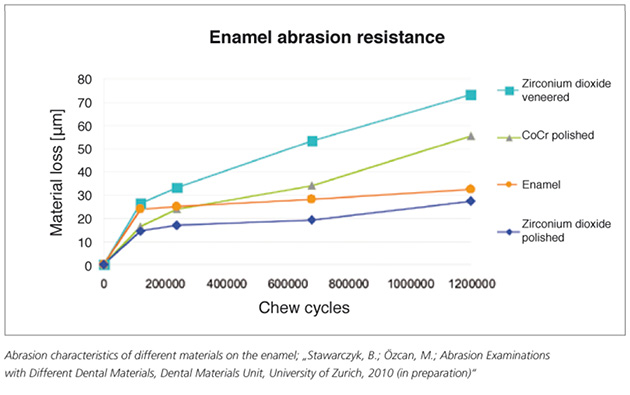

Dental Laboratory Technician | Lab Slips | CMR Dental Lab
Providing services in Dental Training to the area of Idaho Falls, Idaho (ID).
Lab Slips
Click Here for the Lab Slip PDF
Prescheduling Cases with CMR Dental Lab
To ensure the best treatment for your patient we encourage your team to contact Beth, our scheduling coordinator, as soon as your patient accepts treatment. This way we will reserve space on our schedule at the earliest time for the fabrication of all phases of your case. Please have an idea of which restorative materials will be used and which teeth will be treated when scheduling cases. We usually schedule a diagnostic wax-up prior to preparation on more complex cases. Using the silicone matrix of the wax-up to fabricate the provisional restorations saves clinical time and serves as a template for the final case. When scheduling full mouth reconstruction cases, be sure to communicate the sequencing of treatment, my personal preference is to do the anterior 20 teeth first, then the posterior 8 as a final phase of treatment. It is important to know this when completing the diagnostic wax-up in order to have the matrix fabricated to work with this sequence. We are also happy to schedule full mouth reconstructions as a single-phase treatment if you prefer, we work with many different philosophies of treatment. Once we schedule preparation and delivery dates for all phases of treatment of your patient it is important to notify us of any changes in scheduling; we can only honor the return dates if all of the needed components of the case arrive at our facility in a timely manner. We will take the same care to ensure your patient’s case arrives back in your office when expected. Beth is always happy to discuss options and alternatives if you have questions regarding the scheduling of a case. By prescheduling cases, we control the workflow in our lab and ensure you restorations receive the time and dedication they deserve.
What do we send with a case?
- Master impression, maxillary and mandible.
- Detailed impression or model of the provisional restorations.
- Pre-operative models for patients undergoing comprehensive treatment.
- Bite registrations for master models: indicate if bite is taken at MIP, CR or a neuromuscular position. This helps us evaluate the mounting of your casts.
- Bite registrations to cross mount provisional restorations to the prepared tooth models. This is extremely important and needs to be accurate! We check the position of the final restorations relative to the position of the provisional restorations; if this isn’t accurate then the mounting of the provisional model is compromised.
- Face bow transfer for full arch cases.
- Stick bite for all multiunit anterior cases. Watch the stick bite technique video, it’s informative, entertaining and covers some of the common mistakes that we see frequently.
- Photos for communication: The sample set provided here explains the need for each. You can also download the PDF of this to have as a checklist in the operatory.
- Detailed lab slip.
- Some clients include a PowerPoint or Keynote presentation detailing the clinical condition and goals of the case. If you are good at this, it can be very effective communication. Short video clips of patient talking about their goals for the treatment give me a good perspective. Video of simple phonetic tests in the provisional restorations can also be helpful. Avoid feature length films.
Laboratory Prescription
We have provided a detailed laboratory prescription in an electronic format here on our website. You can fill it out digitally and email it to us or download it and print a copy to fill out by hand. This is designed to provide the basic information we need to fabricate your case and deliver it back to you on time. Information regarding the type of restorative material, the desired shade of the final restorations, the shade of underlying dentition and the length of the anterior teeth on comprehensive cases is critical to the success of treatment. Be sure to provide all information that is pertinent to the treatment of your patient. It is helpful for us to know the overall treatment plan and goals of the patient as well as information relative to the current phase of treatment. Providing all necessary information related to your case reduces the need for us to call and interrupt your day with questions about the basics of the case. We still may need to call and discuss treatment options and share ideas, but having the basic data allows us to make the most productive use of your time on the phone or iChat with us.
Our lab prescription is set up for complex, comprehensive cases, if you are treating a simple clinical situation with one or two teeth, it isn’t necessary to fill out everything on the form, just what is relative to the clinical situation being treated. If you have questions feel free to call and ask us for clarification.
Material Choices at CMR Dental Lab
At CMR we offer the finest restorative materials to achieve beautiful long lasting results for your patient. The process of selecting the right material for your patient should be discussed in the treatment-planning phase in order to tailor treatment and material to your patients pre-existing dental condition. We can help to idealize the final result by choosing the least invasive option that will accomplish your patient’s desired result without compromising, either esthetically or functionally. By customizing the treatment plan and material choice for each patient we are able to deliver the least invasive option that can be used successfully for your patient and their clinical situation. Our choices of material include the following categories.
e-max® lithium disilicate pressable material (Ivoclar-Vivadent) is the hottest new development in dentistry today. It is a high strength pressable that can be pressed as thin as .2mm and comes in a variety of opacities to handle various clinical applications. This is as close to a universal restorative material as we have seen in dentistry. It works well for minimal thickness, “no prep” veneers; it works equally well for full coverage, very thick molars, and everything in between those two extremes. It is etchable and can be bonded with a total etch technique, but, can also be cemented with Multilink or Panavia in full crown posterior applications. Flexural strength is in the 400mpa range. The latest studies out of NYU by Dr. Van Thompson’s group rated this “the most robust “ restorative material in dentistry today. Their study simulated chewing forces with a variety of different types of restorations. The comparison between monolithic lithium disilicate and zirconium crowns was compelling: at 100,000 cycles with a load of 350n, 90 % of zirconium-based crowns had failed, mostly by chipping of the layering ceramic; at 1,000,000 cycles and 1000n of force none of the lithium disilicate restorations had failed! For single unit restorations with nice underlying tooth color, this is my first choice for a restorative material. Anterior bridges in low stress areas I’m approaching cautiously. I would also prefer to see the restorations bonded rather than cemented, but the manufacture is ok with cementation as long as there is sufficient restorative thickness and retentive form to the preparations. We are still slightly limited by availability of some colors in this system, which may result is the use of Empress® or feldspathic material for some cases.
Feldspathic veneers, inlays, and onlays type of restoration has been used for years to deliver some of the nicest esthetic results ever achieved in dentistry. They are fabricated with a powdered ceramic buildup on foil or refractory. Fits are good and color is excellent. These restorations must be adhesively placed to be successful. We recommend a total etch 4th generation dentine adhesive (Optibond FL) and a luting resin (Variolink) for delivery. Varying levels of opacity can be used with feldspathic restorations to mask underlying color problems and to create very nice contact lens effect margins. Flexural strength of feldspathic ceramic is around 85mpa. The limiting factor on use of this class of material is the low strength, which isn’t conducive to large areas of unsupported porcelain that occur in complex clinical situations. The development of lithium disilicate pressable restorations have replaced feldspathic veneers in very thin veneer applications and pressed ceramic in general is better to control extensive cases with full arch occlusion. Simple anterior veneers without excessive thickness or areas of unsupported porcelain can be done very successfully with feldspathic veneers.
Lucite reinforced pressed ceramic restorations have been used successfully for veneers, inlays, onlays, and full crowns for the last 20 years. Although there are many different manufactures represented in this category, we have chosen Empress® (Ivoclar-Vivadent) as our primary product. We have used this product successfully for thousands of restorations. Flexural strength is in the range of 175mpa, which allows thicker restorations with areas of ceramic unsupported by underlying tooth structure. Empress works great for anterior veneers as well as posterior restorations. Preparation depth of .7mm is necessary to use Empress restorations; more thickness is needed to mask darker colors of underlying tooth structure. This material has been almost completely replaced with the higher strength e.Max LiS2. We now use empress only for shade matching previous empress cases.
Pressed to Zirconia restorations have gained popularity over the last 10 years. Applications include full crowns, bridges and implant abutments. These restorations require full preparation and the same reduction requirements as PFM restorations (1.5mm axially and 2mm occlusally). Conventional cementation is recommended. Flexural strength of the Zirconia core material is 1200mpa, which make it a good support for bridge applications. Unfortunately, the ceramic that is layered or pressed over Zirconia only has a flexural strength of 85mpa, leaving it very vulnerable to chipping and fracture. We do not offer pressed over zirconia restorations.
New Zirconia Developments:
Monolithic zirconia
New developments in zirconia technology have produced much higher translucency levels in this material. Internal pre-coloring in a variety of shades also are offered from some of the the manufacturers. The combination of these two factors have resulted in a widespread usage of “monolithic zirconia” or “Bruxor” (Tm Glidelwell). While this material is very durable, it is not as aesthetically pleasing as LiS2 in most situations. It does work well for molar restorations over dark teeth, where it blocks out underlying color better than LiS2. Additional aesthetic improvement can be achieved by internally staining the zirconia restorations while in the pre-centered state, thus allowing the development of color gradient from gingival to the incisal as well as special effects that are internalized during the centering process. This produces restorations that can be adjusted or polished without worrying about creating a bright spot.
Polished zirconia vs: Stained and Glazed Zirconia
Most inexpensive, monolithic zirconia restorations are stained and glazed. This is the cheapest, quickest way to produce them, but in my opinion, far from the best way. Glazed zirconia can produce very high wear rates against natural teeth and the staining and glazing process increases the apparent opacity of the zirconia crown. We start with internally shaded discs of Zenostar zirconia, then after milling, we paint internal stains into the uncentered zirconia to achieve the final desired color, then after the centering process, we diamond polish our zirconia to a mirror glaze. This not only looks much better than staining and glazing, it also produces very favorable wear rates in opposing natural dentition. See graph below:

Strategically layered, internally colored zirconia.
As a continuation of the development of zirconia based restorations we come to our premier zirconia products. Advances in digital design by companies like 3Shape allow very precise control of the shape and form of final restorations, including the ability to strategically cut back for layering in non load bearing areas. The improvement in the color and translucency of zirconia described in the previous sections allow us to achieve very nice aesthetics with very minimal thicknesses of layering ceramic added over the facial surface of the zirconia restorations. In our current restorations, we leave all structural and load bearing zones entirely in internally colored, polished zirconia. Highly visible (facial) areas we cut back by .3mm and layer with e.Max cream for a beautiful, natural looking, but very strong restoration. We feel this is the best possible way to maximize aesthetic results while minimizing the risk of future chipping of layering ceramic. As a final comment in this section, I still feel that LiS2 restorations are superior esthetically and functionally to zirconia, so I view zirconia as a material to use where i can’t use e.Max; ie. crowns with deep sub gingival margins, posterior bridges, over dark preps or metal posts and in long span implant applications.
Implant abutments:
All of our implant abutments are done in a full digital design environment, where the desired shape of the tooth is established first, then an abutment is designed to connect the ideal tooth, to the existing implant. (we are happy to help with implant location as well if you bring us in early in the process). Below the gingival level we balance contours to maximize room for vascular tissue development while providing adequate structural support for the implant abutment and crown. Above tissue i like to see an abutment that looks like the adjacent prepared tooth in shape, emergence profile and color. We accomplish this with colored zirconia abutments that utilize a titanium interface with the head of the implant (Titanium-Zirconia Hybrid abutment) or TZH abutment. We also offer anodized titanium abutments or screw retained TZH crown applications where desired. This is an area where new products and ideas emerge monthly, so talk to us about your current abutment preferences.
PFM (porcelain fussed to metal) restorations are still used in many long span bridges and implant applications. We are proud to have Tracy, our substructure specialist, with over 20 years experience in the field to ensure ideal framework design. Nice esthetics with PFM restorations are possible if adequate reduction is accomplished and wide shoulders are prepared for porcelain margins. This class of restoration is the least conservative of natural tooth structure, making it our option of last resort.
Gold crowns are still the most time proven restorations out there. We frequently use them on second molars in full mouth reconstructions. I feel that lithium disilicate restorations are now applicable to most of the situations previously indicated for gold.
Communication Info


Please enter a search term to begin your search.